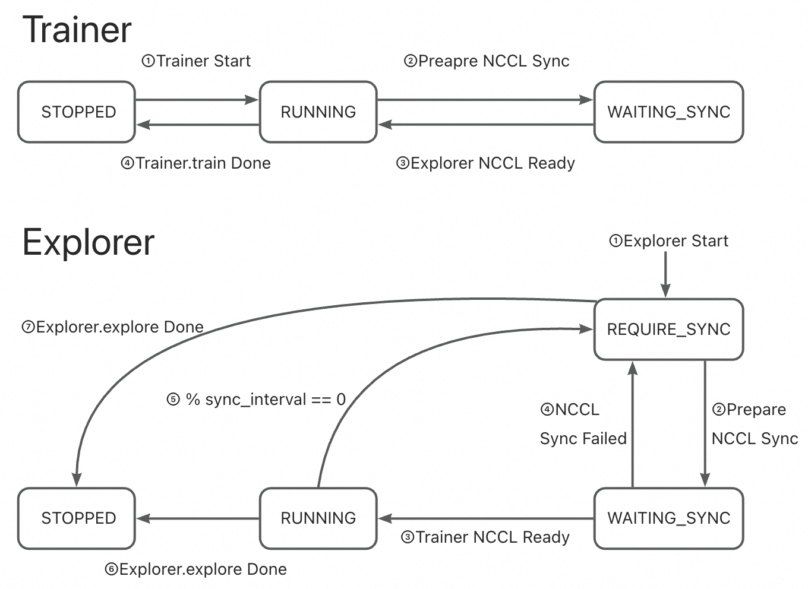
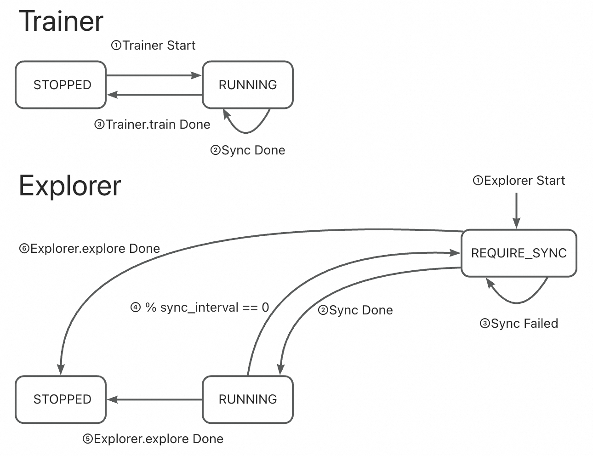

Synchronizer 介绍#
Synchronizer 是 Trinity-RFT 中的核心协调模块，旨在分布式环境下训练强化学习模型时，保持 Trainer 和 Explorer 组件的同步。其主要作用是确保这两个组件始终使用最新的模型权重，从而实现高效且稳定的训练。
你可以将其想象为一个交通控制器：它管理 Explorer（负责从环境中收集 experience）何时以及如何根据 Trainer 最新的模型改进来更新自身的策略。如果没有这种协调，系统可能会因为使用过时或冲突的模型版本而变得低效甚至不稳定。
工作原理：整体架构#
在 Trinity-RFT 中：
Trainer 从收集到的数据中学习并更新模型。
Explorer 使用当前模型与环境交互，生成新的数据。
Synchronizer 通过管理 Explorer 获取最新模型权重的时机和方式，确保两者保持同步。
为实现这一目标，Synchronizer 会：
监控 Trainer 和 Explorer 的状态。
决定何时进行同步。
使用一种策略协调模型权重的传输。
Trainer 内部逻辑#
async def train(self) -> str:
while self.train_step_num < self.total_steps:
try:
# sample may be blocked due to explorer does not generate enough data
self.logger.info(f"Sample data for step {self.train_step_num + 1} started.")
sample_task = asyncio.create_task(self._sample_data())
while not sample_task.done():
# sync weight to make sure the explorer can continue to explore and generate enough data
if await self.need_sync():
# Currently, we do not record the metrics of sync_weight here
await self.sync_weight()
await asyncio.sleep(1)
exps, metrics, repr_samples = await sample_task
self.logger.info(f"Sample data for step {self.train_step_num + 1} finished.")
metrics.update(await self.train_step(exps))
if await self.need_sync():
metrics.update(await self.sync_weight())
# ...
self.monitor.log(metrics, self.train_step_num)
except StopAsyncIteration:
self.logger.info("No more samples to train. Stopping training.")
break
except Exception:
self.logger.error(f"Error in Trainer:\n{traceback.format_exc()}")
break
Trainer 会在以下两个时机检查是否需要同步：
训练过程中数据收集阶段。
每个训练步骤完成后。
如果需要，就会通过 Synchronizer 触发 sync_weight()。
Explorer 内部逻辑#
async def explore(self) -> str:
while True:
try:
self.logger.info(f"Explore step {self.explore_step_num + 1} started.")
explore_continue = await self.explore_step()
if not explore_continue:
break
if self.need_eval():
await self.eval()
if await self.need_sync():
await self.sync_weight() # Request latest weights via Synchronizer
except Exception:
self.logger.error(f"Error in Explorer: {traceback.format_exc()}")
break
Explorer 会在以下时机检查是否需要同步：
完成一次探索步骤后。
开始下一轮数据收集前。
这确保了它始终使用最新的模型版本来生成高质量的 experience。
✅ 核心理念： Trainer 和 Explorer 都会定期向 Synchronizer 查询状态，形成一个紧密的反馈闭环，使训练与探索保持同步。
同步方法：模型权重如何共享？#
模型权重从 Trainer 传递到 Explorer 有 三种方式，每种适用于不同的运行环境。
方法 |
介质 |
适用场景 |
延迟 |
说明 |
|---|---|---|---|---|
|
GPU 到 GPU（直连） |
同一机器，多 GPU |
⬇️ 最低 |
最快，但需在同一台机器 |
|
共享内存 / 网络 |
分布式集群 |
⬇️ 较低 |
较好平衡了速度与灵活性 |
|
磁盘文件 |
跨设备、云环境或慢速系统 |
⬆️ 较高 |
兼容性最强，但较慢 |
1. SyncMethod.NCCL – 高速直连同步#
使用 NVIDIA 的 NCCL 库 实现 GPU 间的直接通信。
极其快速 —— 适用于 Trainer 和 Explorer 运行在同一节点上的情况。
Synchronizer 负责建立通信组并协调同步过程。
🟢 适用场景：具有高速互联的多 GPU 集群。
2. SyncMethod.CHECKPOINT – 基于磁盘的同步#
Trainer 定期将模型权重保存到磁盘。
Synchronizer 读取保存的检查点。
Explorer 从 Synchronizer 拉取权重。
🟡 适用场景：节点之间不共享内存或 GPU 的分布式环境（例如云集群），尤其是具备快速存储的情况。
💡 优势：完全解耦 —— 各组件可在不同机器/平台独立运行。
3. SyncMethod.MEMORY – 内存级同步#
Trainer 直接通过网络或共享内存将模型权重发送至 Synchronizer 的内存中。
Explorer 从 Synchronizer 获取权重，无需访问磁盘。
🟢 适用场景：多节点集群中磁盘 I/O 较慢，但网络带宽充足的情况。
⚖️ 相比 CHECKPOINT，性能与兼容性之间取得了更好的平衡。
同步模式：何时触发同步？#
有两种同步模式，定义了 Explorer 何时 请求更新权重。
1. SyncStyle.FIXED – 固定间隔同步#
每隔固定步数进行一次同步。
通过
sync_interval和sync_offset配置。
示例 |
行为 |
|---|---|
|
每 10 步同步一次（两者同时开始） |
|
Explorer 先运行 5 步，之后每 10 步同步一次 |
✅ 最适合：简单、可预测的环境，探索步骤较短且奖励频繁（例如数学推理任务）。
🔁 可将其类比为节拍器 —— 稳定且规律。
2. SyncStyle.DYNAMIC_BY_EXPLORER – 按需动态同步#
Explorer 在生成一定量数据后决定请求同步。
它会通知 Synchronizer：“我已经准备好获取新模型！”
Trainer 在正常循环中检测该请求并响应。
📌 流程说明：
Explorer 完成
N步后 → 将状态设为REQUIRE_SYNC。等待 Trainer 确认并完成同步。
同步完成后，状态恢复为
RUNNING。若超时，则在下一步重试。
✅ 最适合：复杂、长周期任务，其中数据生成成本高或不规律（例如多轮对话、游戏对战）。
🔄 更加灵活 —— 能根据实际数据产出动态调整。
状态管理：背后发生了什么？#
Synchronizer 通过跟踪 Trainer 和 Explorer 的状态，确保同步过程安全可控。
四个关键状态#
状态 |
含义 |
|---|---|
|
组件已停止运行 |
|
正在训练或探索中 |
|
Explorer 请求新权重 |
|
Explorer 或 Trainer 正在等待同步（NCCL 模式下使用） |
这些状态有助于避免竞态条件，保证协调过程平稳。
不同模式与方法下的状态转换#
🔹 固定模式 + NCCL 同步#
Synchronizer 每
N步安排一次同步。双方短暂暂停，进行 GPU 直连同步。
Trainer 状态在
RUNNING↔WAITING_SYNC间规律切换，Explorer 状态在RUNNING→REQUIRE_SYNC→WAITING_SYNC间切换。

🔹 固定模式 + CHECKPOINT/MEMORY#
Trainer 定期保存或发送权重。
Explorer 在每个间隔检查并拉取更新。
Trainer 状态保持
RUNNING，Explorer 状态在RUNNING↔REQUIRE_SYNC间切换。

🔹 动态模式 + NCCL#
Explorer 在积累足够数据后发出
REQUIRE_SYNC信号。Trainer 检测到信号后启动 NCCL 同步。
Trainer 状态在
RUNNING↔WAITING_SYNC间切换，Explorer 状态在RUNNING→REQUIRE_SYNC→WAITING_SYNC间切换。

🔹 动态模式 + CHECKPOINT/MEMORY#
Explorer 在积累足够数据后发出
REQUIRE_SYNC信号。Trainer 检测到信号后将权重推送给 Synchronizer。
Trainer 状态保持
RUNNING，Explorer 状态在RUNNING↔REQUIRE_SYNC间切换。

常见问题（FAQ）#
Q1: 我该选择哪种同步方法？#
场景 |
推荐方法 |
|---|---|
多 GPU 集群，高速互联 |
|
多节点集群，内存/网络较快 |
|
多节点，磁盘慢或网络不稳定 |
|
最大兼容性（跨平台） |
|
✅ 经验法则： 尽可能使用
NCCL；否则根据基础设施选择MEMORY或CHECKPOINT。
Q2: 哪种同步模式更好？#
使用场景 |
推荐模式 |
|---|---|
短周期任务，反馈迅速（如数学问答） |
|
长交互任务，奖励延迟（如游戏、对话） |
|
💡
DYNAMIC_BY_EXPLORER将控制权交给数据生成方，更适合负载不均衡或变化较大的任务。
总结：核心要点#
特性 |
重要性 |
|---|---|
中心化协调 |
确保 Trainer 和 Explorer 使用一致的模型权重 |
多种同步方法 |
适配不同硬件和部署需求 |
灵活的同步模式 |
支持周期性与按需更新 |
稳健的状态管理 |
防止冲突，保障可靠性 |
闭环设计 |
实现稳定高效的分布式 RL 训练 |
🎯 最终结论： Synchronizer 通过智能管理模型更新在训练与探索之间的传递时机和方式，使分布式强化学习变得可扩展、高效且可靠。
正确配置 Synchronizer 是构建高效稳定 RL 流水线的关键。